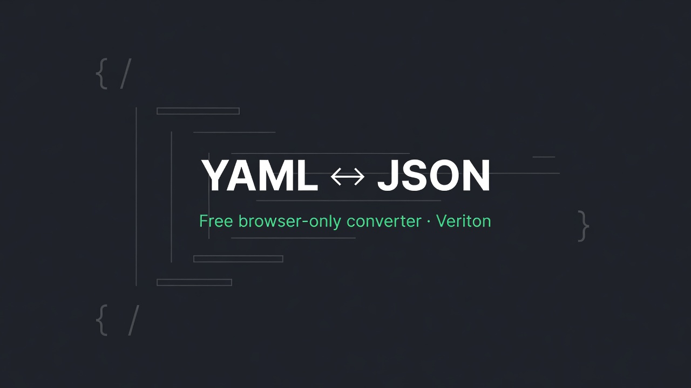

← Veriton Micro-Dev · free tool · hub · CSV↔JSON · JSON Diff · JSON→Schema
Paste YAML or JSON. Convert both ways in your browser — nested maps, sequences, scalars, quoted strings, and simple multiline |/> blocks. Nothing is uploaded.

Need a live URL scrape? $2 Scrape-to-JSON → See sample scrape → CSV↔JSON →
# Convert YAML ↔ JSON
Agents and indies bounce between YAML manifests and JSON APIs constantly. This keeps conversion local. If you need a public URL turned into clean JSON + optional schema, that is the paid $2 Scrape-to-JSON SKU (CORS blocks free in-browser fetch of arbitrary URLs).